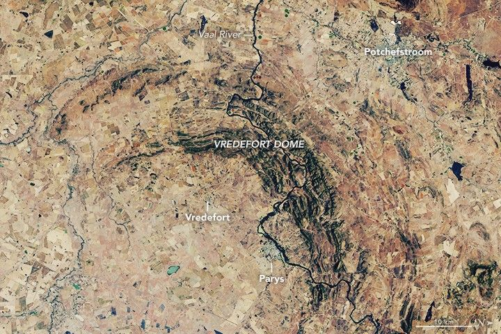

Vredefort Crate
Impact craters exist on every continent on Earth. While many have eroded away or been buried by geologic activity, some remain visible from the ground and from above. This week, we revisit stories featuring some of our most captivating satellite images of impact sites around the planet. The images and text on this page were originally published on September 1, 2018.
About two billion years ago, an asteroid measuring at least 10 kilometers across hurtled toward Earth. The impact occurred southwest of what is now Johannesburg, South Africa, and temporarily made a 40-kilometer-deep and 100-kilometer-wide dent in the surface. Almost immediately after impact, the crater widened and shallowed as the rock below started to rebound and the walls collapsed. The world’s oldest and largest known impact structure was formed.
Scientists estimate that when the rebound and collapse ceased, Vredefort Crater measured somewhere between 180 and 300 kilometers wide. But more than 2 billion years of erosion has made the exact size hard to pin down.
“If you consider that the original impact crater was a shallow bowl like you would serve food in, and you were able to slice horizontally through the bowl progressively, you would see that the bowl’s diameter will decrease with each slice you take off,” said Roger Gibson of University of the Witwatersrand and an expert on impact processes. “For this reason, we are unable to categorically fix where the edge now lies.”
According to Gibson, the uplift at the center of the impact was so strong that a 25-kilometer section of Earth’s crust was turned on end. The various layers of upturned rock eroded at different rates and produced the concentric pattern still visible today. Vredefort Dome, which measures about 90 kilometers across, was observed on June 27, 2018, by the Operational Land Imager (OLI) on Landsat 8.
Notice that only part of the ring is visible. That’s because areas to the south have been paved over by rock formations that are less than 300 million years old. The young rock formations have begotten fertile soils that are intensely cultivated.
The darker ring in the center of this image, known as the Vredefort Mountainland, has shallow soils with steep terrain not suitable for farming, so the area remains naturally forested. Along the ridges in the Mountainland you can see white lines: these are the hardest layers of rock, such as quartzite, which resist erosion. The outer part of Mountainland has exposed rocks that are roughly 2.8 billion years old; this is the Central Rand Group, the source of more than one-third of all gold mined on Earth.
Visitors to the impact site today can witness geologic time by traversing just 50 kilometers from Potchefstroom toward Vredefort. The journey would take you from shallow crustal sedimentary rocks deposited between 2.5 and 2.1 billion years ago, ending with 3.1- to 3.5-billion-year-old granites and remnants of ocean crust that were once about 25 kilometers below Earth’s surface.
“Such exposed crustal sections are incredibly rare on Earth,” Gibson said. “The added bonus here is that the rocks preserve an almost continuous record spanning almost one-third of Earth’s history.”